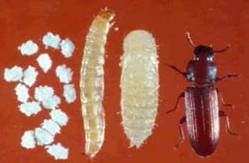

| Home |
| SUGARCANE |
PRIMARY STORAGE PEST |
INTERNAL FEEDERS |
| 1. Rice weevil |
| 2. Lesser grain borer |
| 3. Angoumois grain moth |
| 4. Pulse beetle |
| 5. Cigarette beetle |
| 6. Drug store beetle |
| 7. Tamarind Beetle |
| 8. Sweet Potato weevil |
| 9. Potato tuber moth |
| 10. Arecanut beetle |
EXTERNAL FEEDERS |
| 11. Red flour beetle |
| 12. Indian meal moth |
| 13. Fig moth or almond moth |
| 14. Rice moth |
| 15. Khapra beetle |
SECONDARY STORAGE PEST |
| 16. Saw toothed grain beetle |
| 17. Long headed flour beetle |
| 18. Flat grain beetle |
| 19. Grain lice |
| 20. Grain mite |
| Questions |
| Download Notes |
STORED GRAIN :: PRIMARY STORAGE PEST :: EXTERNAL FEEDERS :: RED FLOUR BEETLE
11. Red flour beetle: Tribolium castaneum (Tenebrionidae: Coleoptera)
Distribution and status: Worldwide
Host range :Â Wheat-flour, dry fruits, pulses and prepared cereal foods, such as cornflakes.
Bionomics : The young larva is yellowish white and measures 1 mm in length. As it matures, it turns reddish yellow, becomes hairy and measures over 6 mm in length. The adult is a small reddish-brown beetle, measuring about 3.5 mm in length and 1.2 mm in width. The last antennal segment is transversely rounded.
The insect breeds from April to October and passes the winter mostly in the t stage. The females lay white, transparent, cylindrical eggs in the flour or in the, frassy material among the grains and other foodstuff. The surface of freshly laid eggs is sticky. A single female may lay as many as 327-956 eggs. The egg period lasts 4-10 days. Larval period is 25 days. Pupation takes place in the flour. The pupa is yellowish and hairy. The pupal stage lasts 5-9 days. The development period from egg to the adult is 26-30 days in summer
Damage symptoms :
Both the larvae and adults cause damage. The greatest damage is during the hot and humid monsoon season. The larvae are always found hidden in the food. The adults, however, are active creatures, but mostly found concealed in flour. Adult construct tunnels as they move through flour and other granular food products. In severe infestation, the flour turns greyish and mouldy, and has a pungent, disagreeable odour making it unfit for human consumption.